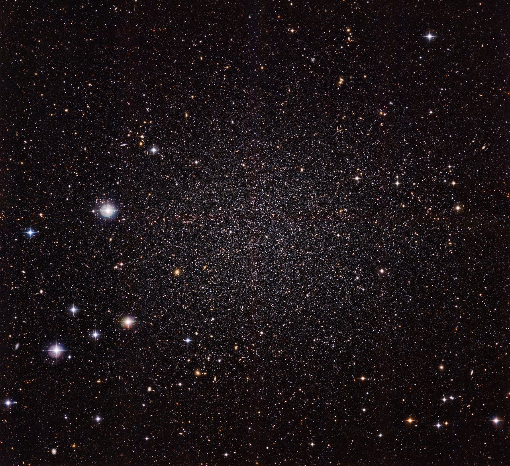
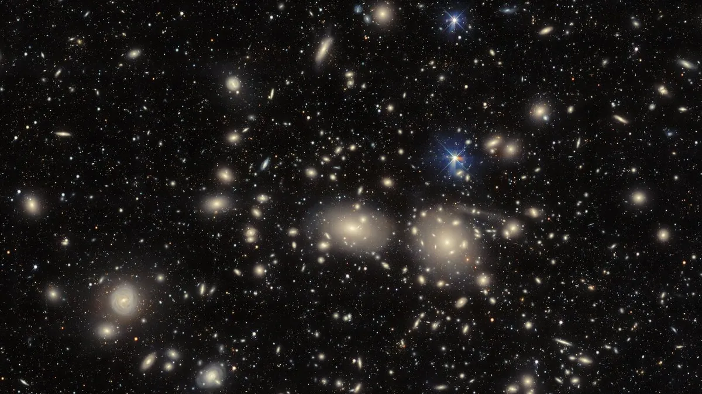
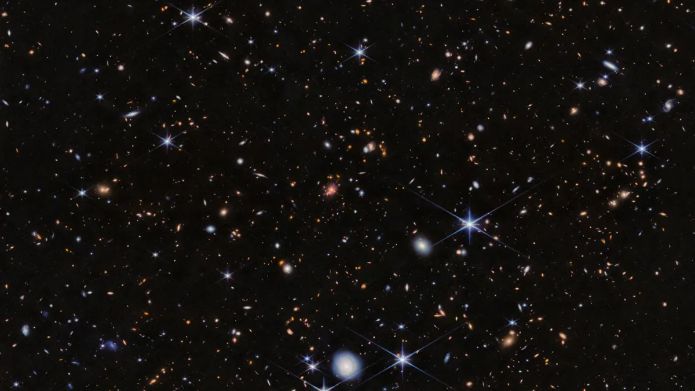

Research Overview
— Carl E. Sagan
Research Interests
Galaxies display extraordinary diversity in their shapes, sizes, colors, and stellar masses, but this diversity is closely tied to their cosmic environments. Galaxies in sparsely populated regions tend to be gas-rich spirals with active star formation, whereas those in crowded galaxy clusters are predominantly gas-poor ellipticals with little to no ongoing star formation.
What physical mechanisms gave rise to these differences, and when in cosmic history did environment begin to impact galaxy evolution? I address these questions by merging multi-wavelength observations with cosmological hydrodynamical simulations to uncover the processes that drive galaxy evolution across diverse cosmic environments.

Small ScalesDwarf Galaxies
Dwarf galaxies are the most numerous and fragile galaxies in the universe, serving as the fundamental building blocks of more massive galaxies. I study these systems as laboratories to understand how internal feedback and external environmental processes shape galaxy evolution.

Large ScalesGalaxy Groups & Clusters
Galaxy groups and clusters represent the most massive, gravitationally bound structures in the Universe, serving as ideal laboratories for examining the impact of environment on galaxy growth and transformation. By tracing cluster and group populations across cosmic time, my research constrains the physical mechanisms that transform galaxies in these dense environments.

Early UniverseThe High-Redshift Universe
Powerful infrared observatories like JWST and Roman are opening unprecedented windows into the early universe. My work focuses on studying galaxy protoclusters, the densest structures in the early cosmos, to detect the earliest signatures of environmental impact on galaxy evolution.
Research Presentations
Explore recorded talks and slides from previous conferences, seminars, and colloquia.
Research Collaborations
Learn about exciting work from the C3VO, GRACE, and GOGREEN collaborations.
Featured Research Projects
Quantifying Survey Incompleteness in Galaxy Protoclusters
Baxter et al. (2025b)
Leveraging the TNG-Cluster simulation to quantify how mass and star-formation incompleteness skews protocluster identification at $z > 2$. We revealed that surveys limited to massive galaxies miss the true protocluster core in $>50\%$ of cases by offsets exceeding 1 proper Mpc, showing how survey limits directly shape density inferences.
View PDF PublicationCosmic Evolution of Group Environmental Quenching Since z ~ 0.8
Baxter et al. (2025a)
Analyzing multi-cycle Keck/DEIMOS spectroscopy targeting satellite candidates in $z \sim 0.8$ galaxy groups. We established the first spectroscopic measurement of satellite quiescent fraction down to $10^{9.5} M_\odot$ at this redshift, showing that the doubling of group quenching timescales since $z \sim 1$ stems from declining starvation efficiency as cosmic gas supplies decline.
View PDF PublicationEnvironmental Quenching in Massive Galaxy Clusters at z ~ 1
Baxter et al. (2022, 2023)
Combining satellite quenched fractions from 14 galaxy clusters in the GOGREEN and GCLASS surveys with infall histories from TNG-300 simulations to constrain quenching timescales. We found that satellite quenching timescales for massive galaxies at $z \sim 1$ match expected cold gas depletion timescales, identifying gas "starvation" as the primary quenching driver in cluster environments.
View PDF PublicationEnvironmental Quenching of Dwarf Galaxies Beyond the Local Group
Baxter et al. (2021)
Combining supervised machine learning with statistical background subtraction to classify star formation activity in dwarf satellites surrounding SDSS galaxy groups ($z < 0.1$). We demonstrated that satellite quenched fraction turns over around $10^9 M_\odot$, proving that environmental quenching efficiency accelerates dramatically for low-mass dwarf systems.
View PDF PublicationLead & First-Author Publications
- What Becomes of JWST/NIRCam-Selected High-Redshift Massive Galaxies? — D.C. Baxter et al. (2026)
- The Quenched Fraction of Satellites Around Simulated Milky Way-mass Galaxies — F. J. Mercado, D.C. Baxter, M. K. Rodriguez Wimberly et al. (2026)
- Quantifying the Impact of Incompleteness on Identifying & Interpreting Galaxy Protocluster Populations w/ the TNG-Cluster Simulation — D.C. Baxter et al. (2025b)
- The Importance of Gas Starvation in Driving Satellite Quenching in Galaxy Groups at z∼0.8 — D.C. Baxter et al. (2025a)
- When the Well Runs Dry: Modeling Environmental Quenching in Massive Clusters at z≳1 — D.C. Baxter et al. (2023)
- The GOGREEN survey: Constraining the Satellite Quenching Time-scale in Massive Clusters at z ≳ 1 — D.C. Baxter et al. (2022)
- A Supervised Learning Approach for Exploring Low-Mass Satellite Quenching Beyond the Local Group — D.C. Baxter et al. (2021)
Select Co-Authored Publications
- The HST-Hyperion survey: Environmental Imprints on the Stellar Mass Function at z ∼ 2.5 — D. Sikorsky et al. (2026)
- The HST-Hyperion survey: Companion Fraction and Overdensity in a z ∼ 2.5 Proto-Supercluster — F. Giddings et al. (2026)
- Caught in the Act of Quenching? – A Population of Post-Starburst Ultra-Diffuse Galaxies — L. Sandoval Ascencio et al. (2025)
- Distinct Origins of Environmentally Quenched Galaxies in the Core and Outer Virialized Regions of Massive clusters at 0.8 < z < 1.5 — G. Hewitt et al. (2025)
- Insights into Environmental Quenching at z ~ 1: An Enhancement of Faint, Low-Mass Passive Galaxies in Clusters — H. Gully et al. (2025)
- Gas Properties as a Function of Environment in the Proto-Supercluster Hyperion at z ~ 2.45 — G. Gururajan et al. (2025)
- The First Quenched Galaxies: When and How? — L. Xie et al. (2024)
- GOGREEN: A Critical Assessment of Environmental Trends in Cosmological Hydrodynamical Simulations at z ≈ 1 — E. Kukstas et al. (2023)
- Sizing from the Smallest Scales: the Mass of the Milky Way — M.K. Rodriguez Wimberly et al. (2022)